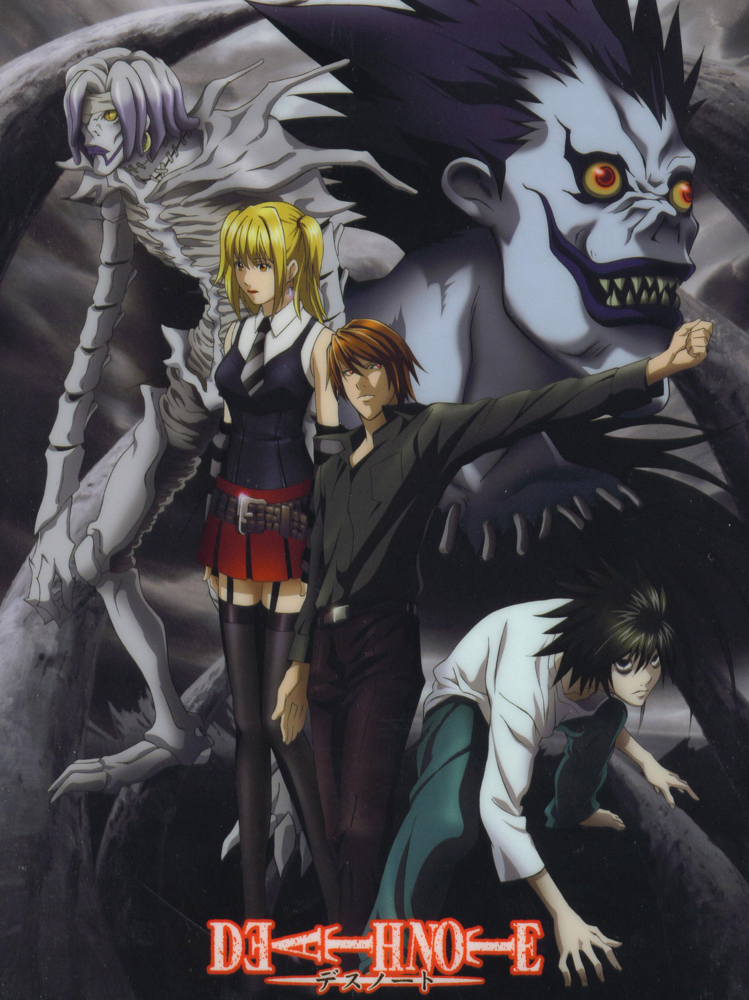

Attack on Titan

Três amigos se juntam para tentar recuperar o mundo das garras dos Titãs.
Primeiro episódio: 7 de abril de 2013
Número de episódios: 85 até o momento.
Escrito por: Hajime Isayama
Adaptação do Mangá
AssitirDeath Note
Um brilhante estudante do ensino médio embarca em uma jornada secreta para eliminar os criminosos do mundo depois de descobrir um caderno capaz de matar qualquer pessoa com o nome escrito nele.
Primeiro episódio: 4 de outubro de 2006
Número de episódios: 37
Escrito por: Tsugumi Ohba
Adaptação do Mangá
AssitirDemon Slayer

A família de Tanjiro é massacrada por demônios e sua irmã é amaldiçoada. Assim, ele parte em uma jornada para encontrar uma cura para a garota e treina para se tornar um caçador de demônios.
Primeiro episódio: 6 de abril de 2019
Número de episódios: 37 até o momento.
Escrito por: Koyoharu Gotōge
Adaptação do Mangá
Assitir